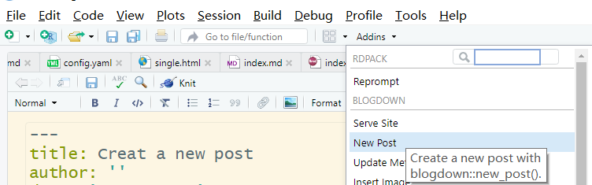
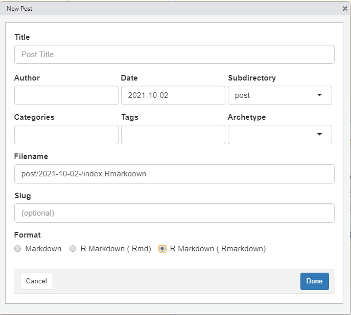
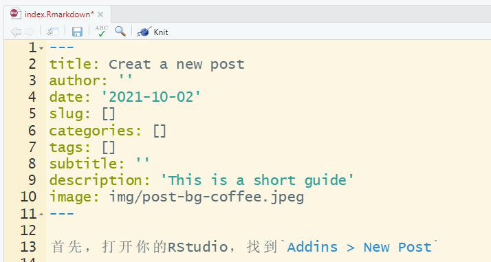

这个部分配置的是你的首页，就是一打开你的网站就看见的那个页面。首先你需要找到这个文件并打开，就在你的YueZhang文件夹一打开就是。
config.yaml
60行，就是你的桌面那个图。我猜你不想换。在img这个文件夹里放你想换的图片，然后在这里把图片名换掉就好了，注意后缀也写上。 header_image: img/Desk.jpg
69行sidebar_avatar: img/ZhangYue.jpg。在img这个文件夹里放你想换的图片，然后在这里把图片名换掉就好了，注意后缀。
个人描述68行，冒号后面想打啥打啥。
sidebar_about_description: The most beautiful, brilliant, talented, gentle, cute girl.
不许编辑
第45行开始
bookmark_link:
- href: https://martinfowler.com
title: Martin Fowler
- href: http://www.servicemesher.com
title: ServiceMesher
bookmarks: yesbookmarks写成no就不会显示书签，yes就显示。href是链接的网址，title是显示出来的名字。这个例子中显示的就是Martin Fowler和ServiceMesher。
建议你直接找我给你换。首先，打开这个文件。
themes/hugo-theme-cleanwhite/layouts/partials/sidebar.html
第264行的src="//music.163.com/outchain/player?type=2&id=xxxxxxxx&auto=1&height=66"
xxxxxxxx换成网易云音乐的id。
首先，打开你的RStudio，找到Addins > New Post

界面会变成：

输入你的文章标题，作者等等信息，当然你也可以不输入，记得最下面format选
R markdown (Rmarkdown)
注：暂时关了Categories, tags可以正常用。
然后你的RStudio中就会出现你刚才创建的文件：

你也可以在这里修改title, author, tags等参数。
编辑文章有两种模式，第一种是在R markdown中直接编辑。
空格和回车都是空格
举个例子，我这样写
这个段落举个例子，我这样写 这个段落
举个例子，我这样写 这个段落举个例子，我这样写 这个段落
切换段落需要空一行
举个例子，我这样写
这个段落举个例子，我这样写
这个段落
 在你的对应文章的文件夹里，找到images，放进去，输入对应的名称就ok了。
把对应文件夹删掉